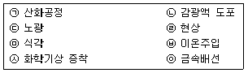
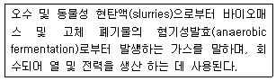
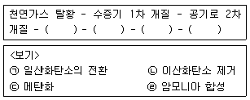
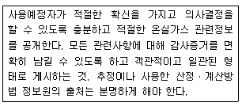
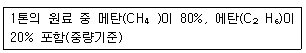
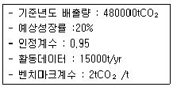
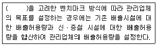
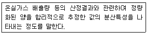
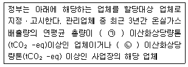
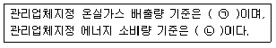

온실가스관리기사 (2016-10-01 기출문제)
1과목: 기후변화개론
1. 1996년 IPCC 가이드라인상에서 국가온실가스 인벤토리에 포함된 분야가 아닌 것은?
- 농업
- 에너지
- 생태계
- 폐기물
(정답률: 74%)

2. 교토의정서에서 감축관리 대상이 되는 온실가스가 아닌 것은?
- 이산화탄소(CO2)
- 과불화탄소(PFCs)
- 육불화황(SF6)
- 염화불화탄소(CFC)
(정답률: 89%)
3. 다음 중 국가 온실가스 배출량 산정방식에 따라 CO2-eq로 확산 시 온실가스 배출량이 가장 많은 것은? (단, IPCC 제2차 평가보고서의 지구온난화 지수 적용)
- CO2 3000톤을 배출하는 공장
- CH4 140톤을 배출하는 공장
- CO2 1000톤과 N2O 6톤을 배출하는 공장
- CO2 1000톤과 CH4 100톤을 배출하는 공장
(정답률: 78%)
4. 기후변화와 관련된 당사국 회의에 관한 설명으로 옳지 않은 것은?
- 제12차 나이로비 총회에서 선진국들의 2차 공약기간 온실가스 감축량 설정을 위한 논의 일정에 합의했다.
- 제14차 포츠난 총회는 2010년 이후 선진국 및 개도국이 참여하는 기후변화체제의 본격적인 협상모드 전환을 위한 기반을 마련한 회의였다.
- 제15차 코펜하겐 총회는 선ㆍ개도국 간의 대립으로 난항을 겪었으며, 최종합의는 도출했으나, 법적 구속력은 없고, 선ㆍ개도국간의 민감한 주요쟁점들은 미해결 과제로 남겼다.
- 제17차 더반총회에서 2020년 이후 선진국만 참여하는 신기후체제 협상개시에 합의하였다.
(정답률: 44%)
5. 2020년 기준 국가온실가스 배출 전망치 가운데 가장 높은 비율을 차지하는 부문은?
- 수송
- 산업
- 공공
- 폐기물
(정답률: 90%)
6. 유엔기후변화협약의 주요 내용과 거리가 먼 것은?
- 모든 당사국의 공통이지만 차별화된 책임과 각자 능력의 원칙에 따라 기후변화에 대처 하여야 한다.
- 선진국의 의무사항으로 온실가스 배출을 2008~2010년까지 1990년 대비 평균 5.2% 감축하여야 한다.
- 모든 회원국은 온실가스감축 국가보고서 및 온실가스 배출목록 보고서를 매년 제출하여야 한다.
- 배출권 거래제도와 공동이행 제도의도입도 포함된다.
(정답률: 24%)
7. 기후변화 적응기술 및 정책에 대한 내용으로 가장 거리가 먼 것은?
- 무경농법은 수확한 농토를 갈지 않고 그루터기에 파종하는 방법이다.
- 보호지역제도 관리대안으로 UNESCO는 생물권 보전지역 지정제도를 운영하고 있다.
- 산림이 농경지나 산업용지, 도시용지로 바뀌면 자연의 이산화탄소 흡수능력이 약화되므로 토지이용형태를 고려해야 한다.
- 생물 멸종을 막기 위해서는 특히 먹이사슬의 아래쪽에 있는 동물의 멸종을 막도록 하는 것이 보다 중요하다.
(정답률: 74%)
8. 우리나라 유엔기후변화협약(UNFCCC)을 비준한 시기는?
- 1993년 12월
- 1995년 4월
- 1997년 12월
- 1999년 4월
(정답률: 71%)
9. 기후변화의 원인으로 거리가 먼 것은?
- 온실가스
- 태양활동
- 화산폭발
- 폭설폭우
(정답률: 73%)
10. 기후변화에 관한 정부 간 패널(IPCC) 4차보고서(2007년)에서 잠재적으로 복사강제력이 음의 부호를 가진다고 보고한 물질은?
- 메테인
- 에어로졸
- 이산화탄소
- 성층권 수증기
(정답률: 71%)
11. 국제 환경조약 중 오존층을 파괴시키는 물질규제와 가장 가까운 것은?
- 몬트리올 의정서
- 바젤협약
- 스톡홀름협약
- 교토의정서
(정답률: 76%)
12. 온실가스 조기감축 실적 인정에 대한 설명으로 옳지 않은 것은?
- 감축목표 이행실적의 평가단계에서 반영한다.
- 사업장단위와 사업단위 감축실적 모두 인정한다.
- 연간 인정총량은 전체 관리업체 목표총량의 5%로 설정한다.
- 감축실적을 정부재정으로 보상한 경우는 인정에서 제외된다.
(정답률: 60%)
13. 기후변화가 수자원 요소에 미치는 영향으로 거리가 먼 것은?
- 지하수의 담수화
- 증발산량의 증가
- 담수자원의 증가
- 지표 및 지하수의 수질 악화
(정답률: 58%)
14. 우리나라의 기후변화 영향과 취약성에 대한 설명으로 틀린 것은?
- 가뭄과 홍수 취약지역이 증가한다.
- 식물의 서식지가 이동한다.
- 직접 및 간접적으로 식량생산에 영향을 준다.
- 질병전파 기간이 짧아진다.
(정답률: 85%)
15. IPCC에서 발간한 보고서 중에서 노벨 평화상에 기여한 것은?
- 제1차 평가보고서
- 제2차 평가보고서
- 제3차 평가보고서
- 제4차 평가보고서
(정답률: 42%)
16. 다음 중 제2차 기후변화협약대응 종합대책에 포함되지 않는 것은?
- 의무부담 협상의 회피
- 온실가스 감축 시책의 지속적인 추진
- 교토메커니즘 대응기반 구축 및 활용
- 민간부문의 참여유도 및 대응능력 제고
(정답률: 77%)
17. 국제 기후변화 관련 협약이 시대순으로 옳게 나열된 것은?
- 마라케시 합의-코펜하겐 합의-발리 로드맵-칸쿤 합의
- 발리 로드맵-코펜하겐 합의-칸쿤 합의-더반 결과물
- 교토의정서-마라케시 합의-더반 결과물-칸쿤 합의
- 코펜하겐 합의- 발리 로드맵-칸쿤 합의-더반 결과물
(정답률: 71%)
18. 온실가스에 대한 설명으로 옳지 않은 것은?
- 메탄(CH4)-천연가스의 주성분으로 쓰레기 매립가스를 포집하여 활용할 수도 있다.
- 과불화탄소(PFCs)-CFC(염화불화탄소)를 대체하여 쓰고 있으며, 반도체의 세척용으로 활용된다.
- 아산화질소(N2O)-아디프산 생산이나 질소비료를 통해 발생된다.
- 수불화탄소(HFCs)-전기제품, 변압기 등의 절연가스로 활용된다.
(정답률: 72%)
19. 다음 중 교토의정서의 내용과 가장 거리가 먼 것은?
- 교토메커니즘의 도입
- 온실가스 저감 이행 시 흡수원의 인정
- 6가지 온실가스의 규제
- 온실가스 감축 세부전략의 수립ㆍ시행 및 보고
(정답률: 36%)
20. 온실가스에 관한 내용으로 옳지 않은 것은?
- 온실가스는 넓은 파장범위의 적외선을 흡수하여 지구의 온도를 상승시킨다.
- 기후변화협약 제3차 당사국 총회에서 6종의 온실가스에 대해 저감 및 관리대상 온실가스로 규정하였다.
- 화석연료의 연소와 관련된 인간의 활동은 자연적 온실효과를 완화시킨다.
- 지구온난화지수가 클수록 지구온난화에 대한 기여도가 크다는 의미이다.
(정답률: 83%)
2과목: 온실가스 배출의 이해
21. 온실가스ㆍ에너지 목표관리 운영 등에 관한 지침상 질산 생산에서 온실가스가 발생되는 주요 공정은 제1산화 공정의 부반응에 의한 것이다. 다음 중 제1산화 공정의 반응과 가장 거리가 먼 것은?
- 2NH3→N2+3H2
- 4NH3+6NO→5N2+6H2O
- NO(g)+0.5O2→NO2(g)+13.45 kcal
- NH3+4NO→2.5N2O+1.5H2O
(정답률: 64%)
22. 온실가스ㆍ에너지 목표관리 운영 등에 관한 지침상 전자산업의 웨이퍼 가공공정 중 공정배출 온실가스를 배출하는 대표 공정 2가지를 가장 올바르게 선정한 것은?

- ㉠, ㉢
- ㉡, ㉣
- ㉣, ㉥
- ㉤, ㉦
(정답률: 82%)
23. 온실가스ㆍ에너지 목표관리 운영 등에 관한 지침상 암모니아 생산시설에서의 공정개선방법으로 사용되는 것과 거리가 먼 것은?
- 공정제어의 고도화
- 폐열 활용 시스템 개선
- 개질기 개선
- N2O 분해 촉매반응 적용
(정답률: 49%)
24. 온실가스ㆍ에너지 목표관리 운영 등에 관한 지침상 고형폐기물 매립시설에 대한 설명으로 옳지 않은 것은?
- 사업장 폐기물에 대해서는 대상 폐기물의 종류에 따라 안정형ㆍ관리형ㆍ차단형의 3종류로 나누어 규제하고 있다.
- 매립장의 기능은 저류ㆍ차수ㆍ처리의 3기능으로 구분할 수 있다.
- 매립시설의 온실가스 배출량은 미생물의 호흡에 의해 발생되는 이산화탄소와 메탄을 포함한다.
- 매립시설의 온실가스 배출량을 줄이기 위해 매립가스를 포집하여 에너지로 이용하거나 소각한다.
(정답률: 60%)
25. 온실가스ㆍ에너지 목표관리 운영 등에 관한 지침상 석회석(CaCO3)이 사용되지 않는 공정은?
- 유리생산 공정
- 암모니아생산 공정
- 카아이드생산 공정
- 철강생산
(정답률: 67%)
26. 폐기물 처리는 기능적으로 4단계로 구분된다. 그 중 폐기물의 소각은 어느 단계에 속하는가?
- 발생억제
- 재활용
- 중간처리
- 최종처리
(정답률: 71%)
27. 온실가스ㆍ에너지 목표관리 운영 등에 관한 지침상 다음 설명하는 연료와 가장 관계가 깊은 것은?

- 매립 가스(Landfill gas)
- 슬러지 가스(sludge gas)
- 바이오디젤 가스(Biodiesel gas)
- 바이오가솔린(Biogasoline)
(정답률: 50%)
28. 상부에서 장입되어 하부로 이동되는 방식이며, 에너지효율이 높은 장점이 있으나, 생산율이 낮고 석탄을 사용하는 경우 품질저하를 가져오는 단점을 가진 킬른은?
- Shaft Kiln
- Lepol Kiln
- Rotary Kiln
- Suspension Preheater Kiln
(정답률: 67%)
29. 온실가스ㆍ에너지 목표관리 운영 등에 관한 지침상 하수처리에 있어서 Tier 1으로 배출계수를 산정할 때, 혐기석 처리공정이 있는 경우, IPCC 가이드라인에서 CH4 배출계수(kgCH4/kgBOD)로 옳은 것은?
- 0.2
- 0.48
- 0.62
- 1.2
(정답률: 58%)
30. 철강 제조공정에 대한 설명으로 옳지 않은 것은?
- 철강 제조공정은 제선 및 제강으로 구분한다.
- 제선공정은 철광석에서 선철을 만드는 공정이다.
- 전로공정은 선철을 이용하여 강을 제조하는 공정이다.
- 고로공정은 철스크랩을 이용하여 강을 제조하는 공정이다.
(정답률: 66%)
31. 본체 내부에 노통화로, 연관 등을 설치한 것으로 구조가 간단하고 일반적으로 널리 쓰이고 있으나, 고압용이나 대용량에는 적합하지 않은 배출시설은?
- 수관식 보일러
- 주철형 보일러
- 원통형 보일러
- 소각 보일러
(정답률: 83%)
32. 온실가스ㆍ에너지 목표관리 운영 등에 관한 지침상 석유화학제품 생산공정 중 보고대상시설에 속하지 않는 시설은?
- 촉매 반응시설
- 메탄올 반응시설
- 카본블랙 반응시설
- 에틸렌옥사이드 반응시설
(정답률: 44%)
33. 온실가스ㆍ에너지 목표관리 운영 등에 관한 지침상 촉매를 활용한 수증기 개질 방법으로 암모니아를 생산하는 데 다음과 같은 7단계의 공정을 거친다. ()안에 해당되는 것을 <보기>에서 순서대로 올바르게 나열한 것은?

- ㉠-㉡-㉢-㉣
- ㉢-㉣-㉠-㉡
- ㉢-㉠-㉡-㉣
- ㉢-㉡-㉠-㉣
(정답률: 69%)
34. 온실가스ㆍ에너지 목표관리 운영 등에 관한 지침에 따라 A업체에서는 암모니아 산화법으로 질산을 제조하고 있으며 온실가스로 배출되는 N2O는 비선택적 촉매환원법(SNCR)으로 제거하고 있다. 이 업체의 여난 질산생산량이 2,000,000L 일 때 연간 온실가스 배출량은? (단, 배출계수 : 2kgN2O/t질산, 질산밀도 : 1.513 kg/L, N2O의 등가계수(GWP):310적용)
- 1.240 tCO2-eq
- 1,876 tCO2-eq
- 4,000 tCO2-eq
- 6,⑤2 tCO2-eq
(정답률: 57%)
35. 온실가스ㆍ에너지 목표관리 운영 등에 관한 지침상 이동연소 온실가스 배출시설 중 철도수송차량의 종류에 해당되지 않는 것은?
- 전기기관차
- 화물차량
- 고속차량
- 디젤동차
(정답률: 61%)
36. 온실가스 직접배출 시설 중에는 이동연소(도로) 배출시설도 포함된다. 다음 중에서 직접연소 이동연소(도로) 배출시설과 가장 거리가 먼 것은?
- 휘발유 승용자동차
- 경유 승합자동차
- 디젤 화물자동차
- 전동 지게차
(정답률: 88%)
37. 온실가스ㆍ에너지 목표관리 운영 등에 관한 지침상 시멘트 제조 공정에서 거의 모든 광물반응 및 전이가 일어나고 시멘트의 품질에 큰 영향을 미치기 때문에 공정 중 가장 중요한 부분은?
- 예열기에서 소성로까지 공정
- 제품 및 출하공정
- 소성로에서 냉각기까지 공정
- 분쇄공정
(정답률: 71%)
38. 농업 작물, 농임산 부산물, 또는 유기성 폐기물 등으로 생물 또는 생물 기원의 모든 유기체 유기물을 포함하여 에너지를 생산하기 위한 원료로 사용되기도 하는 것은?
- 원유
- 부생연료
- 바이오매스
- 코크스
(정답률: 77%)
39. 온실가스ㆍ에너지 목표관리 운영 등에 관한 지침상 마그네슘 생산 시 주조공정에서 용융된 마그네슘의 사용 및 처리공정에서 사용하는 표면가스로 가장 적합한 것은?
- SF6
- CH4
- N2O
- CO2
(정답률: 49%)
40. 온실가스ㆍ에너지 목표관리 운영 등에 관한 지침상 매립분야의 온실가스 배출량 산정방법 중 FOS Method(First Order Decay Method)의 입력변수에 해당되지 않는 것은 무엇인가?
- MCF(호기성 분해에 대한 에탄 보정계수)
- FCF(매립 폐기물 내 화석탄소 비율)
- k(메탄발생 속도상수)
- OX(매립지 표면에서의 산화율)
(정답률: 32%)
3과목: 온실가스 산정과 데이터 품질관리
41. 온실가스ㆍ에너지 목표관리 운영 등에 관한 규정에서 정의하는 바이오매스에 해당되지 않는 것은?
- 폐목재
- 매립지가스
- 산업폐기물
- 목탄
(정답률: 66%)
42. 온실가스 배출량 산정 시 직접 또는 간접 배출에 대한 설명 중 옳은 것은?
- 간접 배출량은 조직이 소유하고 통제하는 발생원에 의해서 발생된다.
- 직접 배출량은 소유하거나 통제하는 프로세스 장치에서의 화학물 생산에서 배출되는 배출량은 제외된다.
- 간접 배출원 중 Scope 2는 조직이 구매한 전력과 스팀을 사용하였을 때 발생하는 온실가스 배출량을 말한다.
- 직접 배출원 중 Scope 3 활동에는 구입한 물질의 추출이나 생산, 수입한 연료의 운송, 팔린 생산품과 서비스의 이용 및 폐기 등이 있다.
(정답률: 62%)
43. 다음은 배출량 산정ㆍ보고의 5대 원칙 중 무엇에 대한 설명인가?

- 완전성
- 일관성
- 투명성
- 정확성
(정답률: 81%)
44. 온실가스ㆍ에너지 목표관리 운영 등에 관한 지침에 따라 연료의 경우 시료의 최소 분석 주기를 만족하여야 하는데, 다음 중 시료의 치소 분석주기 기준의 연결로 옳지 않은 것은?
- 고체연료(원소함량 등)-월 1회 또는 연료 입하 시
- 액체연료(원소함량 등)-분기 1회 또는 연료 입하 시
- 기체연료 중 천연가스, 도시가스(가스성분 등)-연 1회 또는 연료 입하 시
- 기체연료 중 공정부생가스(가스성분 등)-월 1회
(정답률: 76%)
45. 온실가스ㆍ에너지 목표관리 운영 등에 관한 지침에 의거 철강생산에서 보고대상 배출시설이 아닌 것은?
- 소결로
- 전로
- 전기아크로
- 종착로
(정답률: 63%)
46. 활동자료의 수집방법론에서 아래 측정기기의 기호는 무엇을 나타내는가?
- 상거래 또는 증명에 사용하기 위한 목적으로 측정량을 결정하는 법정계량에 사용하는 측정기기
- 관리어베가 자체적으로 설치한 계량기로서, 국가표준기본법에 따른 시험기관, 교정기관, 검사기관에 의하여 주기적인 정도검사를 받는 측정기기
- 관리업체가 자체적으로 설치한 계량기이나, 주기적인 정도검사를 실시하지 않는 측정기기로서 가스미터, 오일미터 등이 있음
- 가스미터, 오일미터, 주유기, LPG 미터, 눈새김탱크, 눈새김탱크로리, 적산열량계, 전력량계 등 법정계량기 및 그 외 계량기를 모두 포함
(정답률: 72%)
47. 온실가스ㆍ에너지 목표관리 운영 등에 관한 지침상 연속측정에 따른 배출량 산정 시 결측자료에 대한 대체다료 생성기준으로 옳지 않은 것은?
- 정도검사 기간 정도검사 및 교정검사 불합격-정상 마감된 전월의 최근 6개월간의 30분 평균자료
- 비정상 측정자료-정상 자료 중 최근 30분 평균자료
- 장비 점검-정상 자료 중 최근 30분 평균자료
- 미수신 자료-정상 자료 중 최근 30분 평균자료
(정답률: 52%)
48. 온실가스ㆍ에너지 목표관리 운영 등에 관한 지침에 따른 조직경계 결정 방법에 대한 내용으로 옳지 않은 것은?
- 조직경계 내에 타 법인이 상주하는 경우 타 법인의 운영통제권을 관리업체가 가지고 있는 경우 관리업체는 상주하고 있는 타 법인의 온실가스 배출시설 및 에너지 사용시설을 조직경계에 포함하여야 한다.
- 조직경계 내에 타 법인이 상주하는 경우 관리업체가 상주하고 있는 타 법인의 운영통제권을 가지고 있지 않으며 해당 상주업체의 온실가스 배출시설 및 에너지 사용시설에 대한 정보 및 활동자료를 파악할 수 있는 경우는 관리업체의 조직경계에서 제외할 수 있다.
- 다수의 관리업체에서 에너지를 연계하여 사용한다면 법인이 서로 다르더라도 각 관리업체는 에너지 사용량을 통합하여 모니터링하도록 경계를 설정하여야 한다.
- 사업장의 특징에 따라 조직경계를 경정하고 조직경계 결정과 관련된 설명을 모니터링 계획에 구체적으로 작성하여야 한다.
(정답률: 35%)
49. 온실가스ㆍ에너지 목표관리 운영 등에 관한 지침상에서 배출량에 따른 시설규모에 대한 설명으로 옳지 않은 것은?
- B그룹은 연간 5만톤 이상 연간 50만톤 미만의 배출이설이다.
- 연간 100만톤 이상의 배출시설은 D그룹에 해당한다.
- 신설되는 배출시설규모 결정 시 신설되는 배출시설의 예상 온실가스 배출량을 계산하여 그 값에 따라 시설규모를 결정한다.
- 최근에 제출된 명세서의 온실가스 배출량보다 최근에 제출된 4개년도 명세서의 평균 배출량이 큰 경우, 최근에 제출된 3개년도 명세서의 평균배출량에 따라 시설규모를 결정한다.
(정답률: 64%)
50. 고정연소시설에서 에너지 이용에 따른 온실가스 배출량 산정 시 배출시설별 교유 배출계수를 개발하여 사용해야 하는 배출시설 규모는?
- 50만 tCO2-eq 이상
- 40만 tCO2-eq 이상
- 30만 tCO2-eq 이상
- 20만 tCO2-eq 이상
(정답률: 68%)
51. 온실가스ㆍ에너지 목표관리 운영 등에 관한 지침에 따른 시멘트 생산과정에서의 온실가스 배출량 산정에 대한 설명으로 옳지 않은 것은?
- Tier 1 방법론 적용 시 시멘트킬른먼지(CKD)의 하소율 측정값이 없다면 100% 하소를 가정한다.
- Tier 2 방법론 적용 시 시멘트킬른먼지(CKD)의 하소율 측정값이 없다면 100% 하소를 가정한다.
- Tier 3 방법론 적용 시 클링커의 CaO 및 MeO 성분을 측정ㆍ분석하여 배출계수를 개발하여 활용한다.
- Tier 3 방법론 적용 시 클링커에 남아있는 소성되지 않은 CaO 측정값이 없을 경우 기본값인 1.0을 적용한다.
(정답률: 60%)
52. 온실가스ㆍ에너지 목표관리 운영 등에 관한 지침상 굴뚝연속자동측정방법에 따른 배출량 제출 시 실시간 측정자료를 전자적 방식으로 해당관장에게 제출해야 하는데, 이 실시간 측정자료에 해당하지 않는 것은?
- CO2 농도
- 배출가스 유량
- 배출구 온도
- 배출구 습도
(정답률: 84%)
53. 온실가스ㆍ에너지 목표관리 운영 등에 관한 지침에 따라 합성불확도 상정 시 활동자료의 상대확장불확도가 30%, 배출계수의 상대확장불확도가 20%일 경우, 배출량의 상대확장불확도는?
- 46.⑤%
- 36.⑤%
- 25%
- 22.25%
(정답률: 43%)
54. 온실가스 배출시설에서 배출되는 온실가스는 직접배출과 간접배출로 구분하여 산정 및 보고할 수 있다. 이 때, 간접배출로 구분될 수 있는 것은?
- 외부로부터 공급된 경우를 해당 시설에서 연로로 사용
- 외부로부터 공급된 LPG 를 해당 시설에서 연로로 사용
- 외부에서 공급된 전기를 해당 시설에서 사용
- 해당 시설에서 처리한 폐기물
(정답률: 55%)
55. 온실가스ㆍ에너지 목표관리 운영 등에 관한 지침에 따라 고정연소시설에서 고체연료를 연소할 때 매개변수별 관리기준에 대한 다음 설명 중 옳지 않은 것은?
- 연료사용량의 측정불확도는 Tiet 2 수준에서 ±5% 이내의 연료사용량 자료를 활용한다.
- Tiet 2 수준에서 발전부분의 산화계수는 0.99를 적용한다.
- Tiet 2 수준에서 기타부문은 산화계수 1.0을 적용한다.
- 연료사용량의 측정불확도는 Tiet 3 수준에서 ±2.5% 이내의 연료사용량 자료를 활용한다.
(정답률: 64%)
56. 검증절차 중 리스크 분석에 대한 내용으로 옳지 않은 것은?
- 오류 발생 가능성에 대한 대응 절차를 결정하기 위해 수행된다.
- 통제리스크는 검증대상 내부의 데이터 관리구조상 오류를 적발하지 못할 리스트이다.
- 고유리스크는 검증팀의 검증 과정에 발생하는 리스크이다.
- 검증팀은 피검증자에 의해 발생하는 리스크를 평가한다.
(정답률: 76%)
57. 온실가스ㆍ에너지 목표관리 운영 등에 관한 지침에 따라 다음 조건을 활용하여 Tier 2 방법론을 적용한 수소제조 공정에서의 CO2 배출량 산정 시 수소 1몰 생산량당 CO2 발생몰수는?

- 0.21
- 0.26
- 0.29
- 3.83
(정답률: 40%)
58. 온실가스ㆍ에너지 목표관리 운영 등에 관한 지침에 따라 모니터링 계획 작성 시 반드시 포함되지 않아도 되는 사항은?
- 활동자료의 모니터링 방법
- 배출시설의 관리업체 지정연도 및 관리자 변경현황
- 품질관리/품질보증 활동 계획
- 배출시설별 모니터링 방법
(정답률: 68%)
59. 온실가스ㆍ에너지 목표관리 운영 등에 관한 지침에 따라 고체연료의 고정연소 시 발생되는 온실가스 배출량을 산정하기 위해 Tier 3 방법론에 따라 배출계수를 개발하여 사용할 경우, 배출계수 개발에 대한 내용으로 옳지 않은 것은?
- CO2 배출계수는 연료 중 탄소의 질량 분율에 비례한다.
- 탄소 배출계수는 연료의 열량계수에 반비례한다.
- CO2 배출계수는 연료의 순발열량에 반비례한다.
- 탄소 배출계수는 CO2 배출계수와 동일하다.
(정답률: 60%)
60. 온실가스ㆍ에너지 목표관리 운영 등에 관한 지침에 따른 산정등급(Tier) 분류체계에 대한 설명 중 옳지 않은 것은?
- Tier 1 : IPCC 기본 배출계수를 활용하여 배출량을 선정
- Tier 2 : 국가 고유배출계수 및 발열량 등 일정부분을 시험분석을 통하여 개발한 매개변수 값을 활용
- Tier 3 : 사업자가 사업장 배출시설 및 감축기술 단위의 배출계수 등 상당부분을 시험분석을 통하여 개발하여 산정
- Tier 4 : 사업자가 공급자로부터 제공받은 매개변수 값을 활용하여 산정
(정답률: 79%)
4과목: 온실가스 감축관리
61. CDM 사업계획서(PDD)의 구성 항목에 관한 내용으로 옳지 않은 것은?
- A : 프로젝트 황동에 대한 일반사항 기술
- B : 베이스라인 및 모니터링 방법론의 적용
- C : 프로젝트 활동 이행기간, 유효기간
- D : 프로젝트 활동에 대한 평가
(정답률: 63%)
62. 다음 신ㆍ재생에너지 중 신에너지에 속하는 것은?
- 태양열
- 소수력
- 바이오
- 수소에너지
(정답률: 84%)
63. 온실가스ㆍ에너지 목표관리 운영 등에 관한 지침에 따라 기존 배출시설의 배출허용량 산정을 벤티마크 기반으로 계산하여고 한다. <보기>의 매개변수를 이용하여 계산하였을 때, 목표연도 배출혀용량(tCO2/yr)은?

- 456000
- 457500
- 480000
- 549000
(정답률: 24%)
64. 외부사업 추가성 평가 절차 및 방법과 거리가 먼 것은?
- 일반감축사업 대상 중, 연간 60,000 tCO2-eq초과의 예상 온실가스 감축량 혹은 흡수량을 갖는 사업에 대하여 추가적으로 분석하도록 한다.
- 외부사업의 내용이 현행 법ㆍ제도에 의무사항으로 규정되어 있어야 한다.
- 경제성이 부족하지만, 외부사업 인증실적 활용을 통하여 경제성 확보가 가능한 사업이어야 한다.
- 지방자치단체 등의 기관에서 온실가스 감축에 필요하여 정책적으로 권장하는 사업은 자발적 참여에 의한 활동으로 간주할 수 있다.
(정답률: 30%)
65. 다음 중 온실가스를 처리하거나 활용하여 감축하는 기술이 아닌 것은?
- 매립장에서 매립가스를 포집한 후 연소시켜 에너지 발전을 한다.
- 하수처리시설에서 소화조의 가스를 회수하여 소화조 가온용 연료로 재사용한다.
- 음식물 쓰레기 사료와, 퇴비화 시설에서 메탄올을 회수하여 취사용 연료로 사용한다.
- 대기오염방지시설에서 휘발성유기화합물을 소각한다.
(정답률: 79%)
66. 디젤엔진의 온실가스 저감기술로 옳지 않은 것은?
- 예 : 혼합 압축착화 연소
- 고압연료분사시스템
- 배기가스재순환(EGR)
- 페이저시스템
(정답률: 35%)
67. 온실가스ㆍ에너지 목표관리 운영 등에 관한 지침에 따라 부문별 관장기관이 조기감출실적 평가할 때 고려대상과 거리가 먼 것은?
- 조기행동의 추가성
- 조기행동의 실제성
- 조기행동의 따른 감축효과의 지속성
- 조기행동의 자율성
(정답률: 70%)
68. 다음 중 해양에너지와 관련된 종류가 아닌 것은?
- 해류 및 해수온도의 차를 이용한 에너지
- 조수간만의 차를 이용한 에너지
- 소수력발전
- 파력발전
(정답률: 70%)
69. 다음은 온실가스ㆍ에너지 목표관리 운영 등에 관한 지침에 따른 벤티마크 기반의 목표설정방법에 대한 설명이다. ()안에 가장 적합한 용어는?

- 최적가용기술(BAT)
- 외부감축실적
- 조기감축실적
- 관리업체의 성장률
(정답률: 59%)
70. 온실가스 감축시설 중 연료의 대체에 관한 내용 중 바이오에탄올에 관한 내용으로 옳지 않은 것은?
- 연소율이 높은 장점이 있다.
- 오염물질의 발생이 적은 장점이 있다.
- 석유계 디젤과 혼합하여 사용한다.
- 값싼 원료를 선정하는 것이 중요하다.
(정답률: 47%)
71. CDM사업 절차와 수행기관이 잘못 연결한 것은?
- 사업계획서 등록 - CDM 집행위원회
- 사업계획서 타당성 승인 - CDM 운영기구
- 사업감축량 검증 및 인증 - CDM 운영기구
- 크리디트(CERs) 발행 - 국가 CDM 승인기구
(정답률: 60%)
72. 온실가스 감축 이생계획서 작성 절차 중 QC 수립에 관한 내용과 가장 거리가 먼 것은?
- 산정 과정의 적절성
- 자체 검증과정의 적절성
- 산정 결과의 적절성
- 보고의 적절성
(정답률: 56%)
73. 이산화탄소 연소 전 포집 기술 중 화학적 흡수법에 주로 사용되는 흡수제로 틀린 것은?
- 메탄올(Methanol)
- 탄산칼륨(Potassium Carbonatre)
- 모노에탄올아민(MEA)
- 메틸아이에틸아민(MDEA)
(정답률: 45%)
74. 온실가스ㆍ에너지 목표관리 운영 등에 관한 지침상 매년 조기감축실적으로 인정할 수 있는 전체 총량은 전체 관리업체 배출허용량의 몇 %로 하는가?
- 1%
- 2%
- 3%
- 5%
(정답률: 79%)
75. 다음 중 Non-CO2 온실가스와 가장 거리가 먼 것은?
- 메탄(CH4)
- 아산화질소(N2O)
- 육불화황(SF6)
- 벤젠(C6H6)
(정답률: 77%)
76. 다음 중 외부사업의 모니터링의 원칙에 대한 설명으로 옳지 않은 것은?
- 모니터링 방법은 등록된 사업계획서 및 승인 방법론을 준수하여야 한다.
- 외부사업은 불확도를 최소화할 수 있는 방식으로 측정되어야 한다.
- 외부사업 온실가스 감축량 산정에 필요한 데이터의 추정 시, 값은 객관적으로 적용되어야 한다.
- 외부사업 온실가스 감축량은 일관성, 재현성, 투명성 및 정확성을 갖고 산정되어야 한다.
(정답률: 44%)
77. 외부사업의 추가성의 종류에 포함되는 것은?
- 환경적 추가성
- 경제적 추가성
- 사회적 추가성
- 기술적 추가성
(정답률: 45%)
78. 자료의 불확실성이 결과에 미치는 영향을 정량화하여 규명하는 시스템적인 절차인 불확도 분석에 관한 내용으로 옳지 않은 것은?
- 정량적인 분석 결과를 제공하므로 결과의 신뢰성이 높다.
- 모든 입력 자료를 확률분포로 나타내는 데 한계가 있다.
- 수행과정이 간단하여 전문지식이 필요 없다.
- 분석 결과에 대하여 의사 결정이 용이하다.
(정답률: 80%)
79. 다음은 온실가스ㆍ에너지 목표관리 운영 등에 관한 지침상 용어정의이다. 무엇이 관한 설명인가?

- 정확도
- 정밀도
- 불확도
- 전환율
(정답률: 66%)
80. 태양광발전기술의 장점으로 옳지 않은 것은?
- 거의 무제한적인 에너지원을 사용한다.
- 태양열반전에 비해 유지보수가 용이하다.
- 이산호탄소 배출량이 매우 적다.
- 발전부지는 대부분 옥상으로 부지면적이 적게든다.
(정답률: 70%)
5과목: 온실가스관련 법규
81. 온실가스 배출거래제 운영을 위한 검증지침상 검증팀장이 온실가스 배출량 검증 결과에 따라 확정할 수 있는 최종 검증의견이 아닌 것은?
- 적정
- 부적정
- 조건부 적정
- 조건부 부적정
(정답률: 82%)
82. 온실가스ㆍ에너지 목표관리 운영 등에 관한 지침상 조기감출실적으로 인정받을 수 있는 대상이 될 수 있는 조기행동의 기간은?
- 20⑤년 1월 1일부터 관리업체가 최초로 목표를 설정하는 해 12월 31일 까지 실시한 조기행동에 의한 감축분
- 20⑤년 1월 1일부터 관리업체가 최초로 관리업체 지정받은 해 12월 31일까지 실시한 조기행동에 의한 감축분
- 2010년 1월 1일부터 관리업체가 최초로 목표를 설정하는 해 12월 31일까지 실시한 조기행동에 의한 감축분
- 010년 1월 1일부터 관리업체가 최초로 관리업체 지정받은 해 12월 31일까지 실시한 조기행동에 의한 감축분
(정답률: 43%)
83. 온실가스 배출권의 할당 및 거래에 관한 법률 시행령상 할당대상업체가 온실가스 배출권의 이월 및 차입을 하려고 하는 경우, 온실가스 배출량을 인증받은 결과를 통보받은 날부터 주무관청에 며칠 이내 전자적인 방식으로 배출권 이월 또는 차입에 관한 신청서를 제출하여야 하는가?
- 5일 이내
- 10일 이내
- 15일 이내
- 30일 이내
(정답률: 24%)
84. 온실가스 배출권의 할당 및 거래에 관한 법률 시행령상 배출권 차입의 한도는 할당대상 업체가 주무관청에 제출하여야 하는 배출권의 얼마까지 가능한가?
- 100분의 50
- 100분의 30
- 100분의 10
- 100분의 5
(정답률: 54%)
85. 온실가스ㆍ에너지 목표관리 운영 등에 관한 지침상 “연료, 열 또는 전기의 공급점을 공유하고 있는 상태, 즉,ㅡ 건물 등에 타인으로부터 공급된 에너지를 변환하지 않고 다른 건물 등에 공급하고 있는 상태”를 말하는 용어는?
- 에너지 관리의 연계성
- 에너지 관리 상태
- 에너지 관리의 상호 의존성
- 에너지 관리 경계
(정답률: 54%)
86. 온실가스 배출권의 할당 및 거래에 관한 법률 시행령상 배출량 인증위원회는 위원장 1인과 15명 이내의 위원으로 구성된다. 인증위원회의 위원장은 누구로 하는가?
- 산업통상자원부차관
- 기획재정부1차관
- 국토교통부차관
- 환경부장관
(정답률: 58%)
87. 다음은 온실가스 배출권의 할당 및 거래에 관한 법률상 할당대상업체 지정에 관한 설명이다. ()안에 알맞은 것은?

- ㉠ 115000 ㉡ 20000
- ㉠ 125000 ㉡ 25000
- ㉠ 135000 ㉡ 30000
- .㉠ 145000 ㉡ 35000
(정답률: 79%)
88. 온실가스 배출권의 할당 및 거래에 관한 법률상 할당대상업체는 이행연도 종료일로부터 몇 개월 이내에 인증받은 온실가스 배출량에 상응하는 배출권을 주무관청에 제출하여야 하는가?
- 3개월 이내
- 6개월 이내
- 9개월 이내
- 12개월 이내
(정답률: 77%)
89. 온실가스 배출권의 할당 및 거래에 관한 법률 벌칙기준 중 1억원 이하의 벌금에 처하는 경우에 해당하는 자는?
- 배출권 거래의 신고를 거짓으로 한 자
- 명세서를 보고를 하지 아니하거나 거짓으로 보고한 자
- 거짓이나 부정한 방법으로 배출권 할당ㆍ조정을 신철하여 할당ㆍ조정을 받은 자
- 온실가스 배출량에 상응하는 배출권을 제출을 하지 아니한 자
(정답률: 59%)
90. 온실가스 배출권의 할당 및 거래에 관한 법률 시행령상 배출권거래제 2차 계획기간에는 할당재상업체별로 할당되는 배출권의 얼마를 무상으로 할당하는가?
- 100분의 97
- 100분의 95
- 100분의 93
- 100분의 90
(정답률: 75%)
91. 온실가스 배출권의 할당 및 거래에 관한 법률 시행령상 배출권 거래제 3차 계획기간 이루의 무상할당비율은 얼마 범위 내에서 정하는가?
- 100분의 90
- 100분의 85
- 100분의 80
- 100분의 75
(정답률: 78%)
92. 온실가스 배출권의 할당 및 거래에 관한 법률상 할당대상업체가 제출한 배출권이 인증한 온실가스 배출량보다 적은 경우에 그 부족 부분에 부과할 수 있는 과징금기준으로 옳은 것은?
- 이산화탄소 1톤당 20만원의 범위에서 해당 이행년도 배출권 평균 시장가격의 3배 이하 부과
- 이산화탄소 1톤당 10만원의 범위에서 해당 이행년도 배출권 평균 시장가격의 3배 이하 부과
- 이산화탄소 1톤당 20만원의 범위에서 해당 이행년도 배출권 평균 시장가격의 5배 이하 부과
- 이산화탄소 1톤당 10만원의 범위에서 해당 이행년도 배출권 평균 시장가격의 3배 이하 부과
(정답률: 68%)
93. 저탄소 녹색성장 기본법령상 중앙행정기관등의 장이 온실가스 감축 및 에너지 절약에 관한 이행계획을 실행한 이행결과보고서 전자적 방식으로 온실가스 종합정보센터에 제출하여야 하는 기한은?
- 다음 연도 3월 31일까지
- 다음 연도 6월 30일까지
- 다음 연도 9월 30일까지
- 다음 연도 12월 31일까지
(정답률: 43%)
94. 저탄소 녹색성장 기본법령상 국가온실가스 감축 목표는 2030년의 국가 온실가스 총배출량을 2030년의 온실가스 배출 전망치 대비 얼마수준까지 감축하는 수준인가?
- 100분의 20
- 00분의 25
- 00분의 37
- 00분의 45
(정답률: 69%)
95. 온실가스 배출권의 할당 및 거래에 관한 법률상 정부가 할당계획 및 시장안정화 조치등을 심의ㆍ조정하기 위해 두는 할당위원회의 위원장은 누구로 하는가?
- 기호기재정부장관
- 환경부장관
- 교육과학기술부장관
- 국무총리
(정답률: 38%)
96. 다음은 저탄소 녹색성장 기본법령상 2014년 1월 1일부터 적용되는 기준이다. ()안에 알맞은 것은?

- 50kiiotonnes CO2-rq 이상
㉡ 200terajoules 이상 - 87.5kiiotonnes CO2-rq 이상
㉡ 350terajoules 이상 - 125kiiotonnes CO2-rq 이상
㉡ 350terajoules 이상 - 125kiiotonnes CO2-rq 이상
㉡ 500terajoules 이상
(정답률: 71%)
97. 저탄소 녹색성장 기본법상 저탄소 사회의 구현을 위한 에너지관련정책의 기본원칙에 가장 적합한 것은?
- 국내 탄소시장을 활성화하여 국제 탄소시장에 적극 대비
- 석유, 석탄 등 화석연료의 사용을 단계적으로 축소하여 에너지 자립도 향상
- 온실가스를 획기적으로 감축하기 위하여 첨단기술 및 융합기술 적극 개발
- 기후변화 문제의 심각성을 인식하고, 국가적 역량을 모아 총제적으로 대응
(정답률: 63%)
98. 저탄소 녹색성장 기본법상 목표관리제 대상 관리업체가 정부의 개선명령을 이행하지 않았을 경우 부과되는 과태료 기준으로 옳은 것은?
- 1천만원 이하
- 5백만원 이하
- 3백만원 이하
- 2백만원 이하
(정답률: 83%)
99. 저탄소 녹색성장 기본법상 정부가 범지구적인 온실가스 감축에 적극 대응하고 저탄소 녹색성장을 효율적ㆍ체계적으로 추진하기 위하여 중장기 및 단계별 목표를 설정하고 그 달성을 위하여 필요한 조치를 강구해야 하는 사항과 거리가 먼 것은?
- 온실가스 감축 목표
- 에너지 절약 목표 및 에너지 이용효율 목표
- 자원순환 촉진 목표
- 신ㆍ재생에너지 보급 목표
(정답률: 66%)
100. 저탄소 녹색성장 기본법상 ㉠ 기후변화대응 기본계획과, ㉡ 에너지기본계획의 계획기간으로 옳은 것은?
- ㉠5년 ㉡5년
- ㉠10년 ㉡5년
- ㉠10년 ㉡10년
- .㉠20년 ㉡20년
(정답률: 47%)